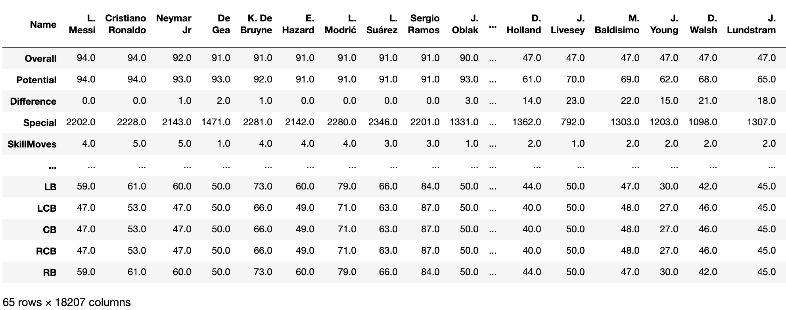
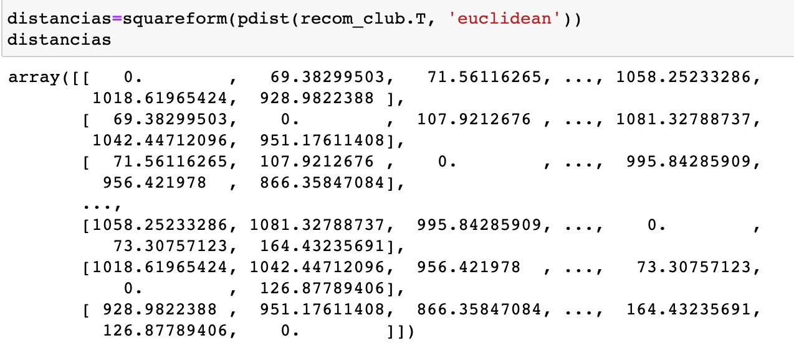
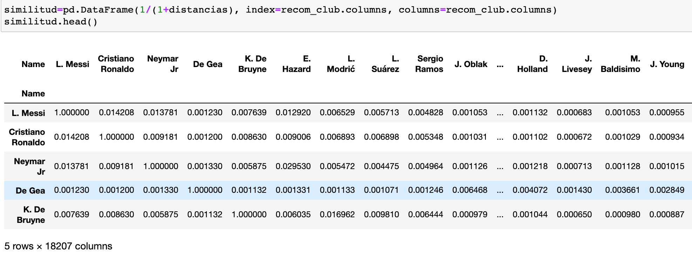
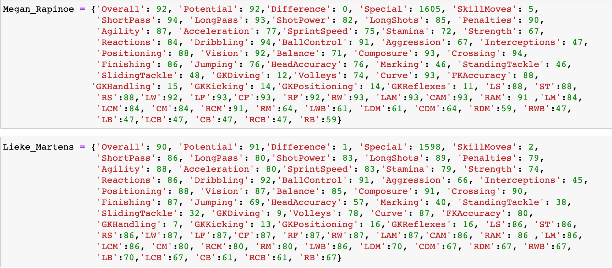
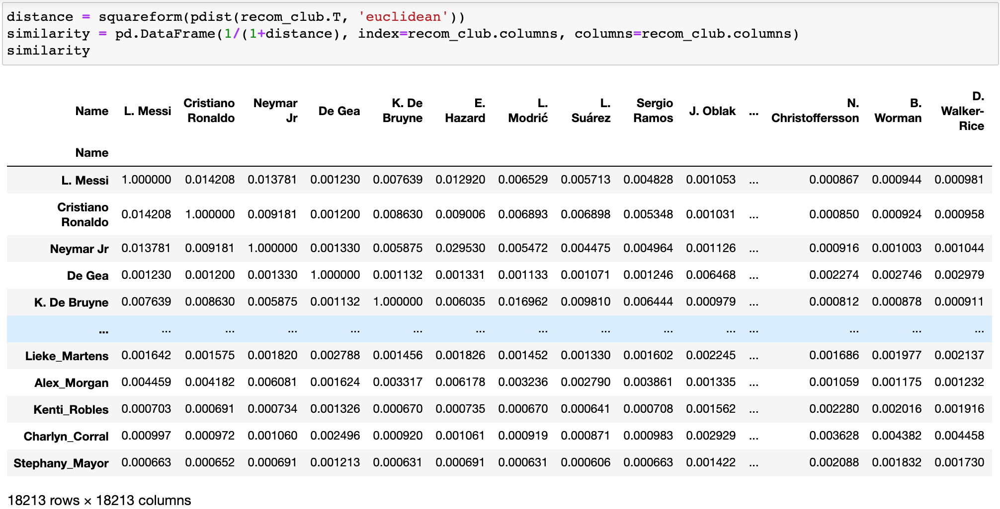
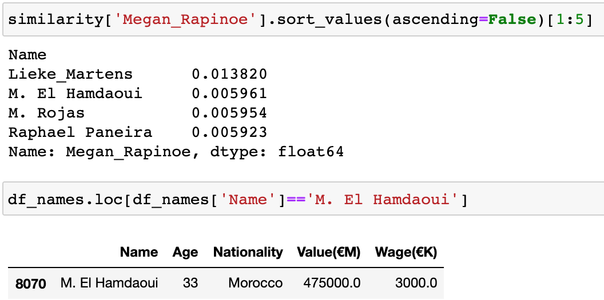
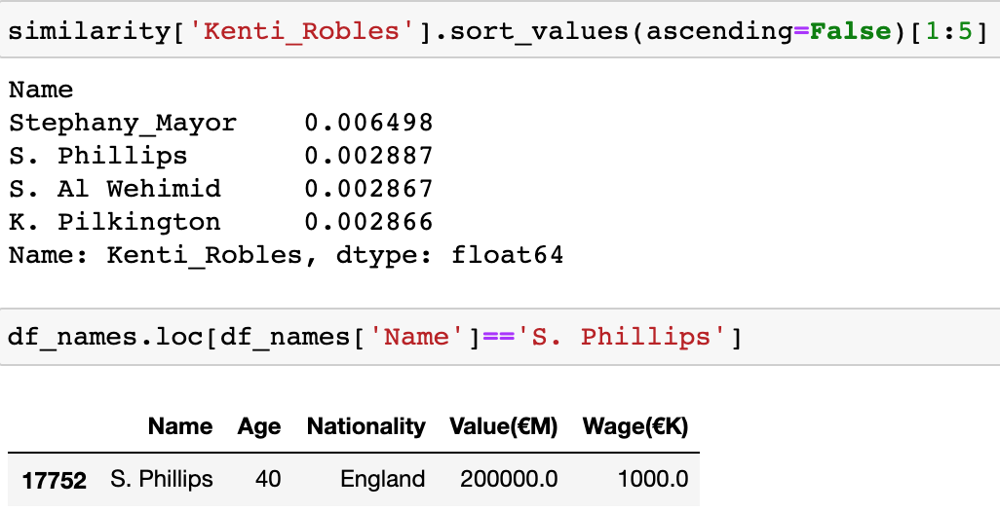
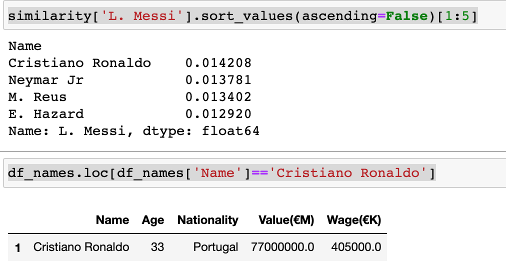
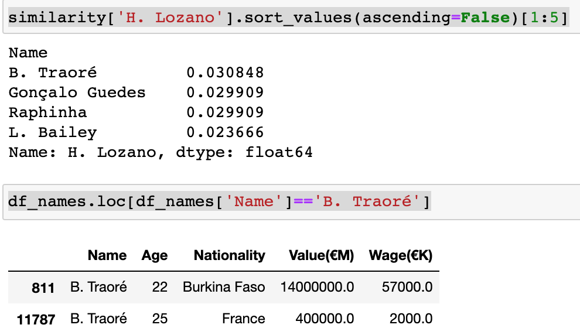
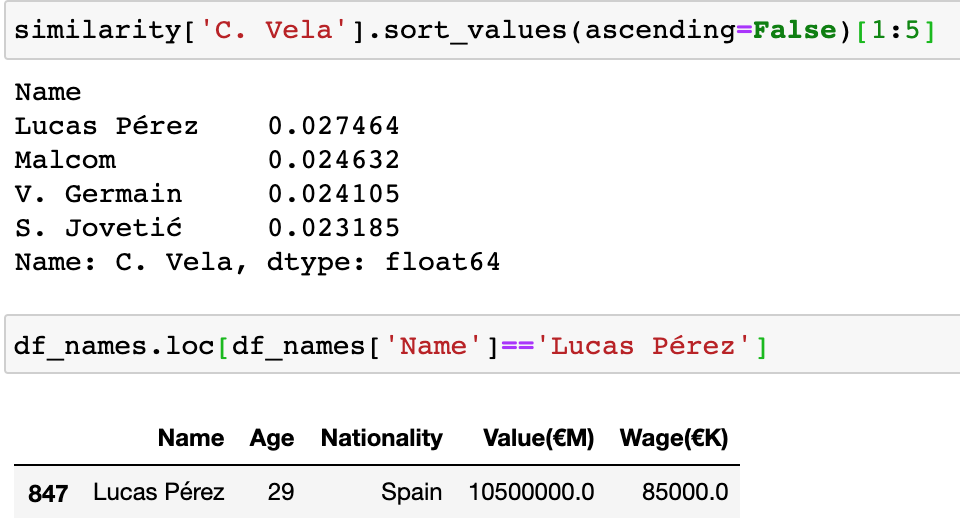

Los sistemas de recomendación, a veces llamados en inglés recommender systems son algoritmos que intentan predecir los siguientes ítems (productos, canciones, etc.) que querrá adquirir un usuario en particular.
El proyecto intenta recomendar futbolistas a los clubes profesionales para tener un equipo competitivo, aunque en la realidad, este tipo de decisiones dependen del presupuesto y tiempo para contratar a los jugadores.

Partimos de seleccionar los atributos físicos de los jugadores para intentar conocer qué jugadores son más parecidos entre sí. Para ello, calcularemos las distancias euclideanas para encontrar dichas similitudes

Posteriormente, estandarizamos las distancias para tener una matriz "identidad" para organizar de mejor forma la información.

Como el objetivo es tener el caso de estudio donde una plataforma web le recomendara jugadoras a un club de fútbol en particular, se crearon diccionarios con las atribuciones físicas de 15 jugadoras de fútbol, mismas que después compararemos jugadores de la base de datos original para determinar qué tan diferentes llegan a ser ambos jugadores.

Calculando de nuevo las distancias y agregando a las jugadoras al DataFrame obtenemos lo siguiente:

Ahora, tomaremos algunas jugadoras que hemos incluído y buscaremos qué tipo de jugadores son parecidos a ellas. Adicionalmente, ubicaremos a dicho jugador y veremos cuál es su valor de mercado y salario para tenerlo como referencia para el siguiente apartado de Machine Learning.
Empezaremos el ejercicio con la jugadora Megan Rapinoe

El jugador más parecido a ella se llama M. El Hamdaoui
Seguiremos con la jugadora mexicana Kenti Robles.

Con la finalidad de conocer cómo funciona el sistema de recomendación, buscaremos qué jugadores son más parecidos a L. Messi.

Naturalmente, el jugador que más "parecido" es a Messi se trata de Cristiano Ronaldo
Finalmente, buscaremos algunos ejemplos más para 2 jugadores mexicanos. El primero de ellos es el "Chucky" Lozano

El segundo jugador es Carlos Vela.

Este sistema de recomendación, nos ayuda a dar una idea de cómo a partir de características físicas y atributos de juego uno podría identificar jugadores similares y hacer uso de esa información para hacer mejores inversiones pensando en competir de manera seria en la liga, copa o cualquier competencia nacional o interancional en la que participe un equipo profesional de fútbol, sin importar si es varonil o femenil.